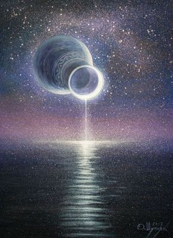

24 Все течет, все изменяется
«В одну и ту же реку нельзя войти дважды и нельзя дважды застигнуть смертную природу в одном и том же состоянии, но быстрота и скорость обмена рассеивает и снова собирает. Рождение, происхождение никогда не прекращается. Солнце – не только новое каждый день, но вечно и непрерывно новое». (Гераклит Эфесский)
Вчера читала об исторических и социальных
предпосылках, которые привели к различиям в концепциях Гераклита и Парменида. О том, как Зенонова черепаха предвосхитила теорию пределов.
Ночью приснился кошмар, я в ужасе проснулась где-то в шесть утра. Потихоньку страх отступил, я лежала в предрассветной тьме, и почувствовала, как вместе со страхом ушла вся лишняя шелуха. Осталась одна я. Во всем огромном-огромном мире. Словно сквозь завесу нашего мира, в котором все течет и изменяется, мне приоткрылся другой, в котором все уже давным давно случилось, и он-то и есть единственный, настоящий, в котором мы жили всегда, и однажды, когда мишура вокруг растает, поймем, что мы никуда из него и не уходили. А я была на границе. Все течет, все изменяется.. вечность неизменна.
